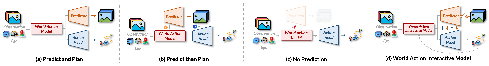
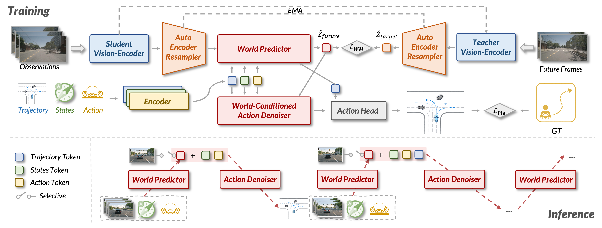
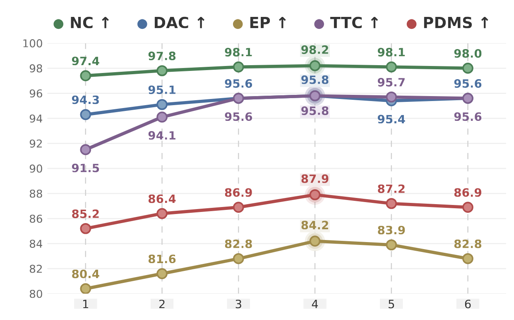
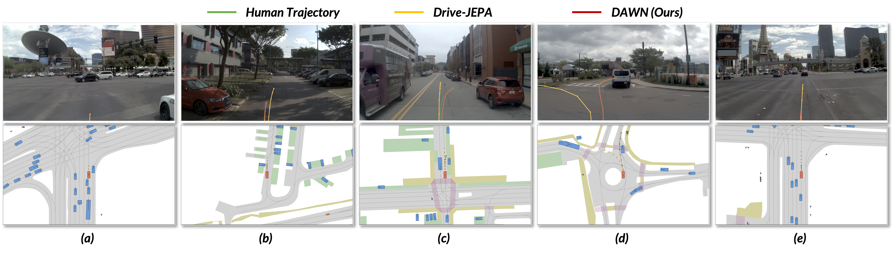

Abstract
A plausible scene evolution depends on the maneuver being considered, while a good maneuver depends on how the scene may evolve. Existing World Action Models (WAMs) largely miss this reciprocity, treating world prediction and action generation as either isolated parallel branches or rigid predict-then-plan pipelines.
DAWN formalizes this perspective as World-Action Interactive Models (WAIMs) and instantiates it for autonomous driving as a compact latent generative model. It couples a World Predictor with a World-Conditioned Action Denoiser: the predicted world hypothesis conditions action denoising, while the denoised action hypothesis is fed back to update world prediction, recursively refining both during inference.
Rather than eliminating test-time world evolution or rolling out the full future in pixel space, DAWN performs short explicit latent rollout to support long-horizon trajectory generation in complex interactive scenes. Experiments show strong planning performance and favorable safety-related results across multiple autonomous driving benchmarks.
Core Idea
DAWN argues that useful world-action models should not merely represent world and action together. They should let the two hypotheses co-evolve during inference: the current world hypothesis refines the action hypothesis, and the emerging action hypothesis revises the predicted world evolution.
WAIM Formulation
Future world states and future actions are inferred as coupled variables instead of independent outputs or fixed pipeline stages.
Latent Rollout
DAWN uses a short semantic latent rollout rather than expensive pixel-space future rendering.
Recursive Refinement
A World Predictor and World-Conditioned Action Denoiser repeatedly update each other to form a coherent future-action pair.
Method
Architecture
DAWN contains a Student Vision-Encoder, a training-time Teacher Vision-Encoder, an Auto-Encoder Resampler, a World Predictor, a World-Conditioned Action Denoiser, and a lightweight Action Head. The implementation uses V-JEPA 2 Large as the vision backbone and compresses dense visual tokens into compact latent world tokens.
Inference
At inference time, the teacher branch is removed. DAWN encodes the current observation into latent context, produces an initial action hypothesis, alternates between short latent world rollout and action denoising, and finally decodes the refined action state into a trajectory.
Training Recipe
The report describes four stages: large-scale driving video pretraining, Auto-Encoder Resampler training, World Predictor training on downstream datasets, and joint world-action training where action proposal and interactive refinement share denoiser weights.

Results
Best overall perception-free PDMS reported in the report, with strong NC, ego progress, and time-to-collision scores.
Lowest average L2 trajectory error among compared methods, improving mid- and long-horizon accuracy.
Best average collision rate, showing improved planning accuracy without sacrificing safety-related behavior.
Component ablations show that interactive world-action updates improve PDMS from 85.2 to 87.9 in the lower-resolution setting. Removing either World→Action or Action→World coupling weakens the model, supporting the report's central WAIM principle that world evolution and action generation should mutually constrain each other.
NAVSIM v1 Benchmark
| Type | Method | Inputs | NC ↑ | DAC ↑ | EP ↑ | C ↑ | TTC ↑ | PDMS ↑ |
|---|---|---|---|---|---|---|---|---|
| Perception-based | Transfuser | C & L | 97.7 | 92.8 | 79.2 | 100 | 92.8 | 84.0 |
| Perception-based | Hydra-MDP | C & L | 98.4 | 97.7 | 85.0 | 100 | 94.5 | 89.9 |
| Perception-based | Hydra-MDP++ | C & L | 97.6 | 96.0 | 80.4 | 100 | 93.1 | 86.6 |
| Perception-based | DiffusionDrive | C & L | 98.2 | 96.2 | 82.2 | 100 | 94.7 | 88.1 |
| Perception-based | GoalFlow | C & L | 98.4 | 98.3 | 85.0 | 100 | 94.6 | 90.3 |
| Perception-based | DriveDPO | C & L | 98.5 | 98.1 | 84.3 | 100 | 94.8 | 90.0 |
| Perception-based | iPad | Camera | 99.2 | 97.4 | 87.8 | 99.7 | 96.3 | 91.7 |
| Perception-based | DriveSuprim | Camera | 98.6 | 98.6 | 91.3 | 100 | 95.5 | 93.5 |
| Perception-free | LAW | C & L | 97.4 | 93.3 | 78.8 | 100 | 91.9 | 83.8 |
| Perception-free | World4Drive | C & L | 97.4 | 94.3 | 79.9 | 100 | 92.8 | 85.1 |
| Perception-free | Epona | Camera | 97.9 | 95.1 | 80.4 | 99.9 | 93.8 | 86.2 |
| Perception-free | Drive-JEPA | Camera | 98.7 | 96.2 | 82.9 | 100 | 95.5 | 89.0 |
| Perception-free | DAWN* (Ours) | Camera | 98.2 | 95.8 | 84.2 | 100 | 95.8 | 87.9 |
| Perception-free | DAWN (Ours) | Camera | 98.7 | 95.9 | 84.3 | 100 | 96.0 | 89.1 |
DAWN* denotes the 256×256-resolution variant reported in the technical report.
nuScenes Benchmark
| Method | L2 (m) ↓ | Collision Rate (%) ↓ | ||||||
|---|---|---|---|---|---|---|---|---|
| 1s | 2s | 3s | Avg. | 1s | 2s | 3s | Avg. | |
| ST-P3 | 1.33 | 2.11 | 2.90 | 2.11 | 0.23 | 0.62 | 1.27 | 0.71 |
| OccNet | 1.29 | 2.13 | 2.99 | 2.13 | 0.21 | 0.59 | 1.37 | 0.72 |
| UniAD | 0.48 | 0.96 | 1.65 | 1.03 | 0.05 | 0.17 | 0.71 | 0.31 |
| VAD | 0.41 | 0.70 | 1.05 | 0.72 | 0.07 | 0.18 | 0.43 | 0.23 |
| PPAD | 0.31 | 0.56 | 0.87 | 0.58 | 0.08 | 0.12 | 0.38 | 0.19 |
| GenAD | 0.28 | 0.49 | 0.78 | 0.52 | 0.08 | 0.14 | 0.34 | 0.19 |
| BEV-Planner | 0.30 | 0.52 | 0.83 | 0.55 | 0.10 | 0.37 | 1.30 | 0.59 |
| LAW | 0.26 | 0.57 | 1.01 | 0.61 | 0.14 | 0.21 | 0.54 | 0.30 |
| World4Drive | 0.23 | 0.47 | 0.81 | 0.50 | 0.00 | 0.12 | 0.33 | 0.16 |
| WorldRFT | 0.21 | 0.44 | 0.76 | 0.47 | 0.10 | 0.11 | 0.23 | 0.15 |
| DAWN (Ours) | 0.17 | 0.31 | 0.52 | 0.33 | 0.00 | 0.10 | 0.23 | 0.11 |


BibTeX
@techreport{lu2026dawn,
title={The DAWN of World-Action Interactive Models},
author={Lu, Hongbo and Yao, Liang and He, Chenghao and Wang, Haoyu and Gu, Xiang and Li, Xianfei and Liao, Wenlong and He, Tao and Peng, Pai},
institution={COWARobot Co. Ltd},
year={2026},
month={May},
url={https://arxiv.org/abs/ARXIV_ID}
}